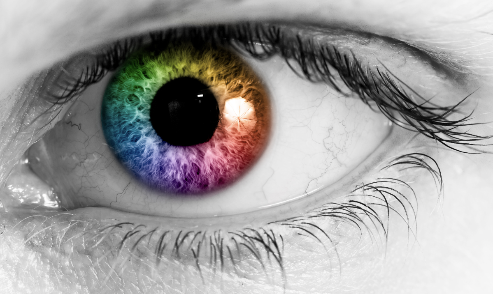

What does it mean to be Colorblind?
Most people are familiar with colorblindness in reference to visual impairment. Colorblindness is a common condition which affects about 1 in 12 people assigned male at birth and 1 in 200 people assigned female at birth. Worldwide there are estimated to be about 300 million people with colorblindness. [colourblindawareness] Even though varying degrees of vision impairment are very common, I have yet to have any training on accessibile design through any of my Web Development and Design courses at PCC. My hope is that in doing this project I will gain resources to use in the future and to share with fellow students.
Colorblindness as a social condition might be less familiar to some. This is a social impairment where a person tries to ignore the vast systemic implications of racism. Not "seeing color" or race is a way for a person to sweep real issues and biases under the rug and maintain racist systems while allowing the person to feel moraly superior to an openly racist person.
We read the book “Race After Technology” by Ruha Benjamin this term. This text emphasized how technology as it currently exists in the world is allowed to operate as a black box. A black box is a coding term meaning the input and output are visible, but all computational mechanisms are secret, unknown, or invisible to the user. So, tech companies get to take a blameless stance when the technologies they produce are racially biased. The examples of racially biased technology in the book are staggering.
The fact that technology has the capacity to have racist outcomes is indisputable. But how does that happen? Technology does not exist in a vacuum. It reflects the systems and the people who create it. The capitalist, patriarchal, white supremacist systems in the United States inform the social norms that tech is developed under, and the structures it is created to work for and within.
The concept of colorblindness is further cemented with the black box logic. Since the mechanisms that create bias are invisible, it encourages a mindset of blamelessness. A mentality that computers aren’t human, therefore they can’t see or understand race, and can’t be racist. Computers are in effect colorblind. But this is a cop out assumption. Computers are literally machines that do whatever humans tell them to do, and humans ARE biased. Hiding behind the thin paper of colorblind tech is a lazy and entitled easy "out" for developers to not have to do the essential and necessary work of being really intentional with their product to ensure it is as unbiased and fair as possible for the entirety of the human population regardless of age, gender, race, or ability.
Completely dismantling capitalist, patriarchal, able-bodied, white supremacist systems is a daunting task, and one that is beyond my scope as a single person. But on the more personal and accessible side of those systems that create racist technology is the developer. A single person, or a relatively small group of people, who actually write the code that goes into making the technology work. If we want to move a mountain, we might as well start with the individual tiny bits of earth it is made of. Ourselves.